第5章 统计和概率中级
本章将探索股票价格的统计特性，以及收益率的平稳性、正态和自相关等话题。了解这些概念有助于我们进行统计推断，并为后面构建交易策略做铺垫。
随机过程
要拟合模型，首先得有模型。首先，假设股票价格是由某种随机过程引起的。随机过程是一组以时间为索引的随机变量。包括以下例子：
- 每日流星撞击上层大气的数量
- 每分钟抵达交易所对盘系统（matching engine）的平均买方订单量
- 每次买卖盘记录最优价改变时，标普500指数电子迷你合约的买方出价更新
- IWM大盘指标的每日收盘价
- 每小时GOOG收益的百分比
可以把随机过程想象成一个黑箱，观察者看不到它的内部构造和工作流程，唯一可见的是给定时间点的数值输出。 这组以时间顺序排列的X1，X2，X3...XN，称为一个随机过程。值得注意的是伴随这一组数值的时间并不一定是事先定好的离散区间，只要顺序排列即可。
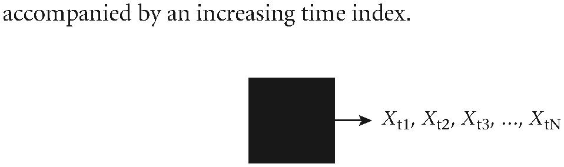
图5.1 随机过程
交易员的一个最终目标是，根据观察值X1，X2，X3...XN，探索黑箱机制（随机过程）。这个问题并不简单。理论上，只要知道黑箱用来产生今天股票价格的参数，就能依据这些信息预测明天的值。现实中，并没有单一决定性的机制可以产生股票价格或其他类似价格（汇率、期权报价、债券价格等等）。这种机制即使真的存在，也会极其复杂，而且随时间变化无常。
然而，我们仍然可以用数学和编程工具回答关于市场的一部分具体问题。作者相信，即使模型简单，经过经常调整，也能很好地近似一个更复杂的过程。与其依赖复杂模型描述市场上的事件，不如常常回顾简单的模型和技术。这需要使用者透彻地理解简单模型的局限和故障点。
为了将复杂的市场机制拟合到统计框架，我们需要做一些简化性的假设：
- 存在一个可以建模的随机过程。可以记录和分析随机过程产生的随机变量（价格、收益率、交易量）。
- 大部分随机过程的参数不随时间变化。
股票价格分布
经验告诉我们，股票价格非负，而且理论上可以无限大。所以理论概率分布的下限为零，右边的尾部靠近但永远不重合x轴。我们之所以关心股票价格，是为了问这样的问题：明天SPY ETF收盘价高于210美元的概率是多少？
下图展示了内存中的全部历史价格的直方图。均值和标准差也计算并标注在图中。
# 提取价格并计算相关统计量值
prices <- SPY$SPY.Adjusted
mean_prices <- round(mean(prices), 2)
sd_prices <- round(sd(prices), 2)
# 绘制包含图例的直方图
hist(prices, breaks = 100, prob=T, cex.main = 0.9)
abline(v = mean_prices, lwd = 2)
legend("topright", cex = 0.8, border = NULL, bty = "n",
paste("mean=", mean_prices, "; sd=", sd_prices))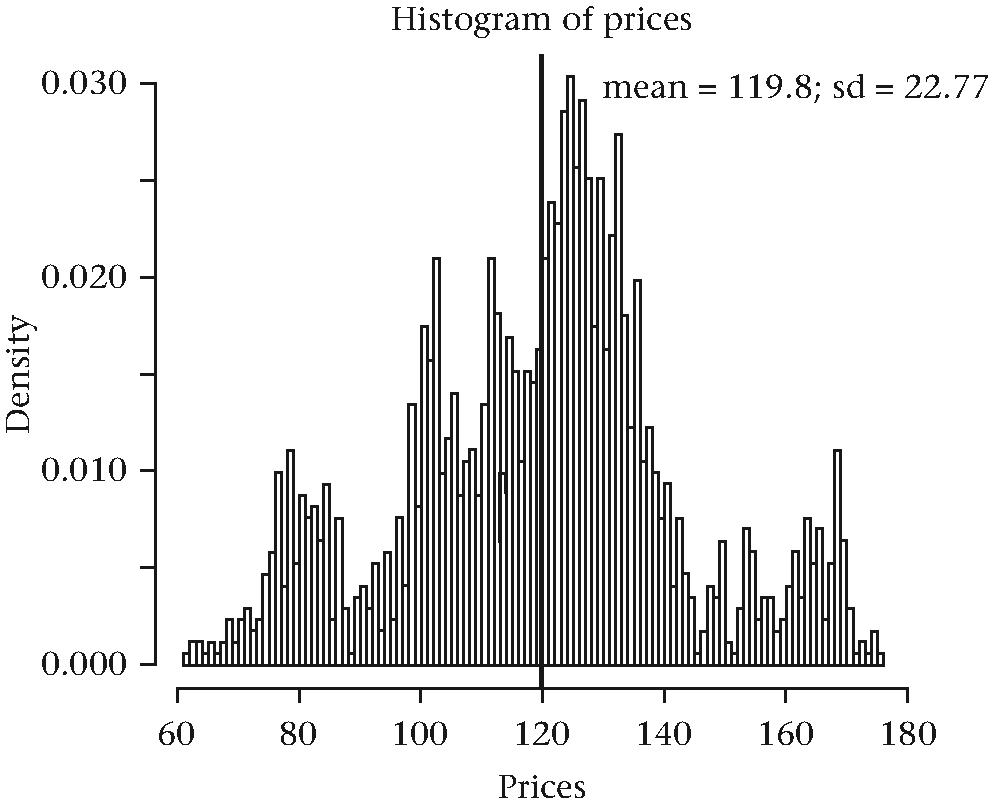
图5.2 价格分布
类似地，我们可以看到另一段时间跨度下的价格分布。进行下一步之前，为了让生活更简单，我们把上面代码封装为一个函数，在不同时间段运行。函数定义如下：
plot_4_ranges <- function(data, start_date, end_date, title) {
# 设定绘图窗口为两行两列
par(mfrow = c(2, 2))
for(i in 1:4) {
# 创建一个合适时间范围的字符串
range <- paste(start_date[i], "::", end_date[i], sep = "")
# 创建价格向量以及需要的统计量
time_series <- data[range]
mean_data <- round(mean(time_series, na.rm = TRUE), 3)
sd_data <- round(sd(time_series, na.rm = TRUE), 3)
# 绘制包含图例的直方图
hist_title <- paste(title, range)
hist(time_series, breaks = 100, prob=TRUE,
xlab = "", main = hist_title, cex.main = 0.8)
legend("topright", cex = 0.7, bty = 'n',
paste("mean=", mean_data, "; sd=", sd_data))
}
# 重置绘图窗口
par(mfrow = c(1, 1))
}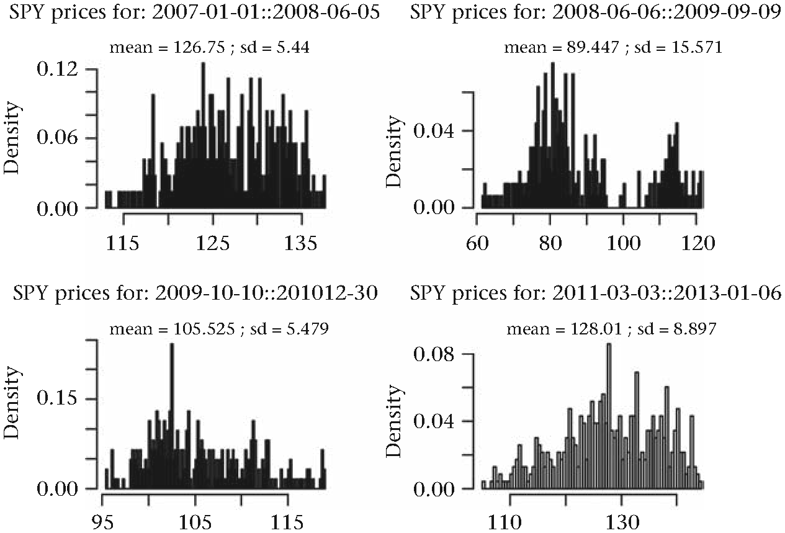
图5.3 四个价格分布
定义好函数，我们就可以放心使用了：
# 定义好我们感兴趣的时间起点和结点
begin_dates <- c("2007-01-01", "2008-06-06",
"2009-10-10", "2011-03-03")
end_dates <- c("2008-06-05", "2009-09-09",
"2010-12-30", "2013-01-06")
# 绘图
plot_4_ranges(prices, begin_dates,
end_dates, "SPY prices for:")从图中可以很清楚地看到，我们关心的统计量（均值和标准差）随时间改变。不同时间段产生迥异的结果。随着时间推移，SPY的价格分布大致是非平稳的。
平稳性
当一个随机过程的概率分布不随时间改变形状和位置时，其被称为严格平稳 的。考虑一个随机过程。这个过程的实现是一个形如, , ... , 的时间序列。下面方程的等号意味着，分布是一致的。对严格平稳，有
（5.1）
现实生活中，严格的平稳很难发生。更实际地，大多数情况下我们关心分布的前几个矩是否平稳。均值和方差就是这样两个矩2。平稳的弱形式叫做方差平稳，弱平稳，或二阶平稳。
下面式子如果成立，该过程称为协方方差平稳：
（5.2） 以及
（5.3）
第二个方程描述的是，协方方差可以表达为单一参数的函数，也就是τ。
我们为什么关心平稳？为了预测未来，我们做一简化假设，未来会与过去相似。想象一个黑箱，纳入历史收盘价，预测下一日收盘价。如果黑箱从未见过最近的价格（比如，校准阶段），它怎么可能对未来价格作出结论？但是，如果在训练阶段，新输入与旧的输入相似，于是黑盒子会维持下去，对未来的价值产生有根据的猜测。作为首要原则，我们希望任何预测算法的输入是平稳的。
金融价格数据大多数时候是不平稳的。要使之为我所用，须转化为平稳时间序列。一种实现的方法是关注收益率而非价格本身，另一种是使用协整模型3，此时单个序列非平稳但组合序列平稳。
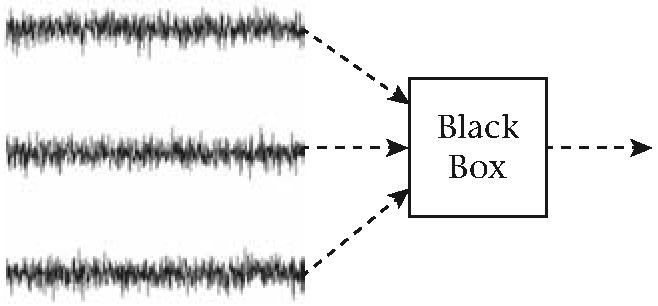
图5.4 黑箱的平稳输入
下面选取与之前同期的SPY股票数据展开分析。我们将探讨连续价格变动的自然对数，而非价格。此度量称为对数收益率。对于比较小的百分比收益率，对数收益率提供更适当的近似。数学推理如下：
（5.4）
泰勒展开式为
（5.5）
考虑上式中x取值很小的情形：
（5.6）
用Rt代替x，即
（5.7）
我们为何关心价格的对数变动，而弃用一般常见的收益率呢？主要是为了对数价格的良好的数学特性。由于价格符合对数正态分布，那么自然有百分比收益率在模型中呈正态分布。
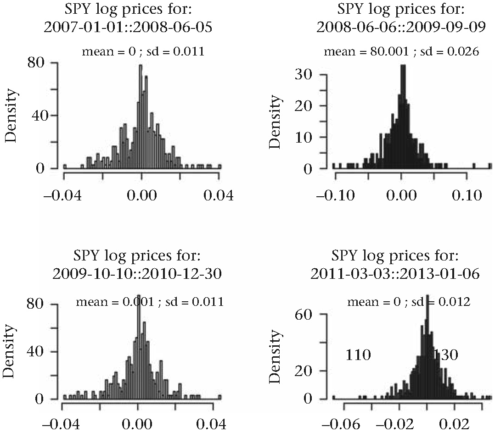
图5.5 平稳收益率的分布
# 计算对数收益率
returns <- diff(log(prices))
# 使用跟之前相同的函数绘制收益率而不是价格
plot_4_ranges(returns, begin_dates, end_dates, "SPY log prices for:")图中均值近乎为0，标准差相差不大。初步视察的结果显示，收益率的分布，至少分布的前几个矩，是平稳的。对平稳特性的分析并没有复杂的统计方法。各种统计检验试图回答这样的问题：某一个特定的分布是否平稳？例如，KPSS单位根检验，Elliot-Rothenberg Stock检验，Augmented Dickey-Fuller (ADF)检验，Phillips Peron检验，Schmidt Phillips检验, 以及Zivot Andrews检验。如果你想看到更多解释和R代码示例，推荐Pfaff关于用R进行协整时间序列分析的书http://quant.stackexchange.com/questions/2372/how-to-check-if-a-timeseries-is-stationary。
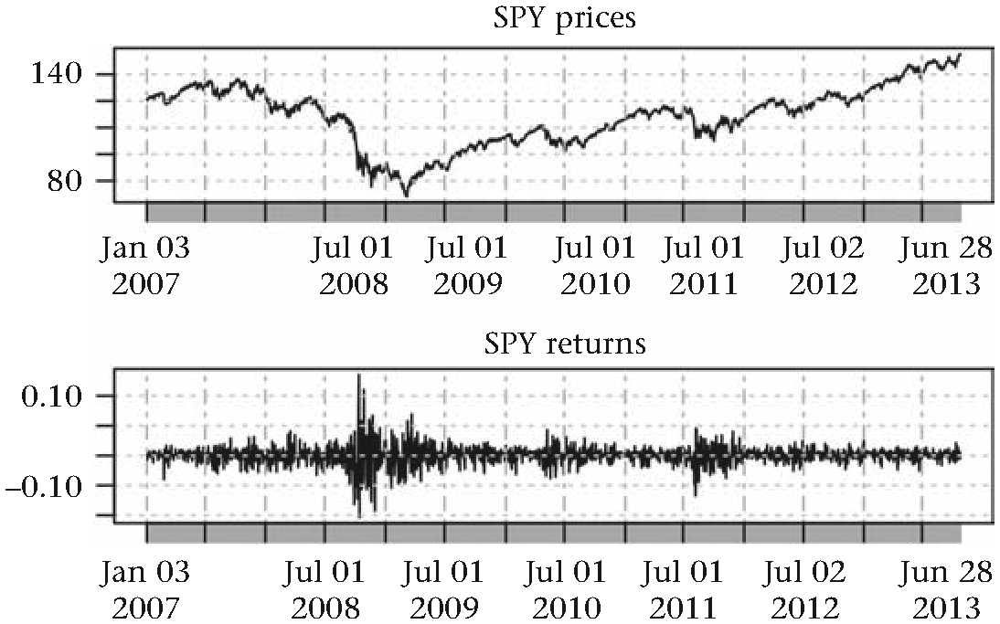
图5.6 股票价格和收益率
用urca判断平稳
我们可以借助urca包来判断一个假设的时间序列是否平稳。另外，ucca包还能判断时间序列之间的协整关系。
接下来，我们将对SPY的原始价格和指数收益率进行平稳性检验。
基于前面针对价格和收益率的讨论，我们预期价格分布非平稳而收益率则是平稳的。
文献中的检验方法不胜枚举，urca包只实现了其中一部分。比如Kwiatkowski检验、单位根检验、KPSS等等。KPSS的思想是的原假设假定序列是包含确定性趋势平稳的。检验结果的统计量和临界值对比，从而判断是否接受或拒绝原假设。
# 获取SPY数据并且确认其为非平稳
require(quantmod)
getSymbols("SPY")
spy <- SPY$SPY.Adjusted
# 使用默认设置
require(urca)
test <- ur.kpss(as.numeric(spy))
# 输出结果是一个S4对象
class(test)
## [1] "ur.kpss"
## attr(,"package")
## [1] "urca"
# 提取检验统计量值test@teststat
test@teststat
## [1] 11.63543
# 看一下临界值
test@cval
## 10pct 5pct 2.5pct 1pct
## critical values 0.347 0.463 0.574 0.739临界值大到足以拒绝时间序列平稳的原假设。那么收益率也是如此吗？
spy_returns <- diff(log(spy))
# 检验收益率的平稳性
test_returns <- ur.kpss(as.numeric(spy_returns))
test_returns@teststat
## [1] 0.336143
test_returns@cval本例中，在10%的显著性水平下我们也不能拒绝原假设。截取2013年1月后的一段时间，此时价格似乎更加冷静。
test_post_2013 <- ur.kpss(as.numeric(spy_returns['2013::']))
test_post_2013@teststat
## [1] 0.06936672此时不能拒绝代表时间序列平稳的原假设。
正态性假设
现在，我们要做出关于价格和收益率分布的简化假设。忽略某些时段明显的异常值和集群点，假设收益率符合正态（高斯）分布。为什么？这样会让数学更简单。
给定均值，标准差，高斯分布的公式是：
（5.8）
看看正态分布叠加在每日收益率数据上会是什么样子。首先，生成一组随机数，具有和股票收益率一致的均值和标准差。下面的R代码实现了这一叠加：
# 绘制直方图和密度曲线
mu <- mean(returns, na.rm = TRUE)
sigma <- sd(returns, na.rm = TRUE)
x <- seq(-5 * sigma, 5 * sigma, length = nrow(returns))
hist(returns, breaks = 100,
main = "Histogram of returns for SPY",
cex.main = 0.8, prob=TRUE)
lines(x, dnorm(x, mu, sigma), col = "red", lwd = 2)函数dnorm()，基于给定x的范围、均值和方差的生成一组正态分布数据。函数lines()构造出直方图基础上的曲线图。
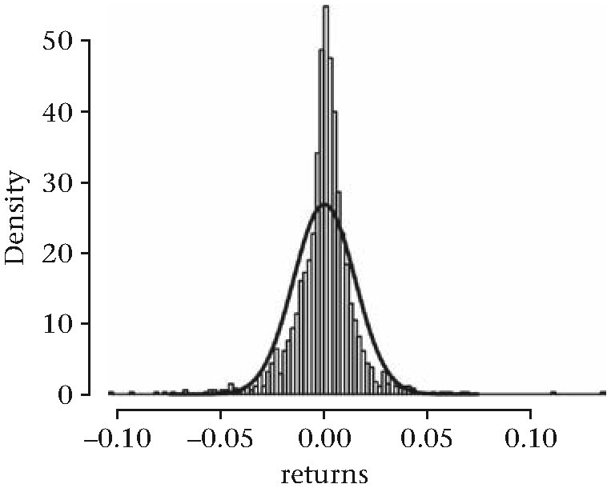
图5.7 正态分布的直方图与密度曲线
如图，数据显然不符合正态分布。零值附近的观察值较为密集，而正态分布假设这个区段具有更少的数据。而且分布的尾部有更多异常值。我们把这个经验分布叫做尖峰（leptokyrtic）分布。单词lepto来自“薄”的希腊语单词。lepto的希腊语反义词是是platy，意为“厚”。
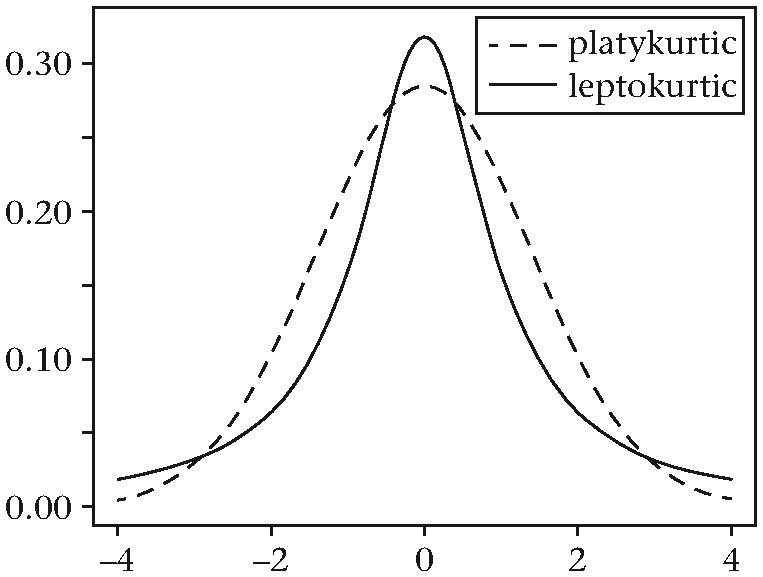
图5.8 尖峰与低峰
另一种展示实际的经验分布和理论上正态分布二者区别的方式是通过函数qqnorm和qqline。还是用刚刚的数据
# 设定绘图窗口为一行两列
par(mfrow = c(1, 2))
# SPY数据
qqnorm(as.numeric(returns),
main = "SPY empirical returns qqplot()",
cex.main = 0.8)
qqline(as.numeric(returns), lwd = 2)
grid()
# 正态分布随机数据
normal_data <- rnorm(nrow(returns), mean = mu, sd = sigma)
qqnorm(normal_data, main = "Normal returns", cex.main = 0.8)
qqline(normal_data, lwd = 2)
grid()点与直线的偏差表示数据分布与正态分布的背离程度。有很多判定正态分布和与给定经验分布之间偏离的统计检验。其中大部分（比如Kolmogorov-Smirnov, Shapiro-Wilks, Cramer-von Mises, Anderson-Darling等检验）已经在R里实现。
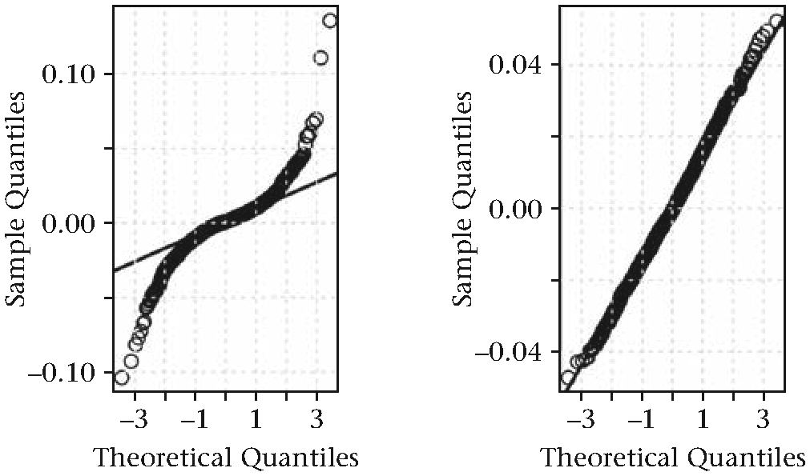
图5.9 分位数（QQ）图
比如，夏普检验（Shapiro test）只需要把原始收益率作为参数喂给函数shapiro.test()。结论的P值可以看作数据来自一个正态分布的似然性。
answer <- shapiro.test(as.numeric(returns))
answer[[2]]
## [1] 5.118396e-34根据以上结论，我们的数据来自一个高斯分布的可能性很小。
对上述分析，作者持将信将疑的态度。在盲目相信统计检验以前，你需要理解数据的本质结构。过多或过少的数据会使统计检验非常敏感，导致产生更多假阳性预测，从而极大地扭曲结论。异常值也会歪曲事实。在进行严格的统计分析之前，你最好尽可能以可视化的方式检查数据。这样会节约大量时间，免去麻烦。下面的例子给出了异常值扭曲结论。构造一个由正态分布的数值组成的向量，然后用函数shapiro.test()查看与正态分布的偏离。
set.seed(129)
normal_numbers <- rnorm(5000, 0, 1)
ans <- shapiro.test(normal_numbers)
ans[[2]]
## [1] 0.9963835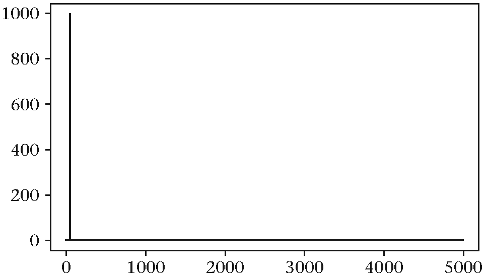
图5.10 错误值
P值很大，意味着我们的样本确实来源于正态分布。如果样本中存在一个异常值呢？比如一个输入错误导致某个值特别大？
# 人为破坏一个数据点
normal_numbers[50] <- 1000
ans <- shapiro.test(normal_numbers)
ans[[2]]
## [1] 1.775666e-95本例中P值实际为零，Shapiro-Wilks检验没有过滤掉异常值的影响，因而不够稳健。进行检验之前，绘制出简单的数据图就可以发现这一错误值。
绘制数据图不一定实用。我们可以将探测和处理异常数据的过程自动化，或者运用稳健的异常值诊断统计方法。
相关性
异常值处理通常不只是科学，更是一门艺术。让我们再次考虑SPY和VXX的对数收益率。这次，我们想要了解每日收益率数据有怎样的相关关系。
相关性（Correlation）是两个随机变量之间线性依赖关系的一个统计测量。业界最常用的是皮尔逊相关系数（Pearson Correlation）。另一个受欢迎的是秩相关（Rank Correlation，译者注：有的书中翻译为等级相关）。皮尔逊相关系数形式如下：
(5.9)
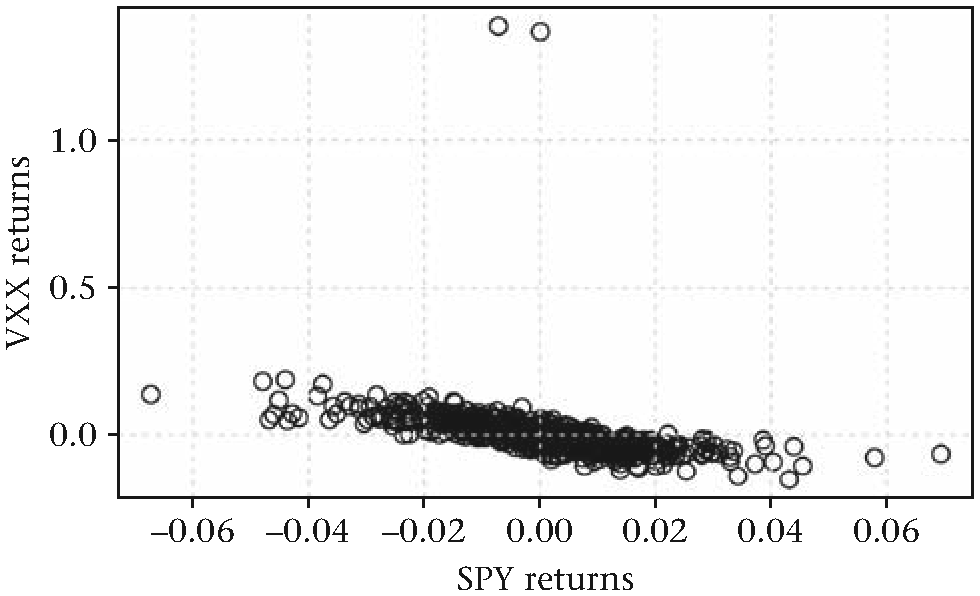
图5.11 常见的收益率散点图
分子项是一个重要的数学构造，广泛应用在金融领域。它叫做随机变量X和Y的协方差（covariance）。出现两个以上变量时，这个构造也可以表达成矩阵形式，叫做协方差矩阵，是现代金融学的基石。公式中的相关系数和协方差揭示差不多一致的信息。尺度是唯一的不同。取正值表示随机变量X和Y可能以线性的形式相互关联。上面给出的相关系数公式是总体统计量。不同的样本统计量试图产生无偏和有效的 7估计量。
sv <- as.xts(returns_matrix[, c(1, 6)])
head(sv)
## SPY.Close VXX.Close
## 2009-02-02 -0.003022794 -0.003160468
## 2009-02-03 0.013949240 -0.047941603
## 2009-02-04 -0.004908132 0.003716543
## 2009-02-05 0.014770965 -0.006134680SPY和VXX时间序列数据的散点图如下：
在R里，相关性通过函数cor()传入一个时间序列矩阵得到。
cor(sv)
## SPY.Close VXX.Close
## SPY.Close 1.0000000 -0.4603908
## VXX.Close -0.4603908 1.0000000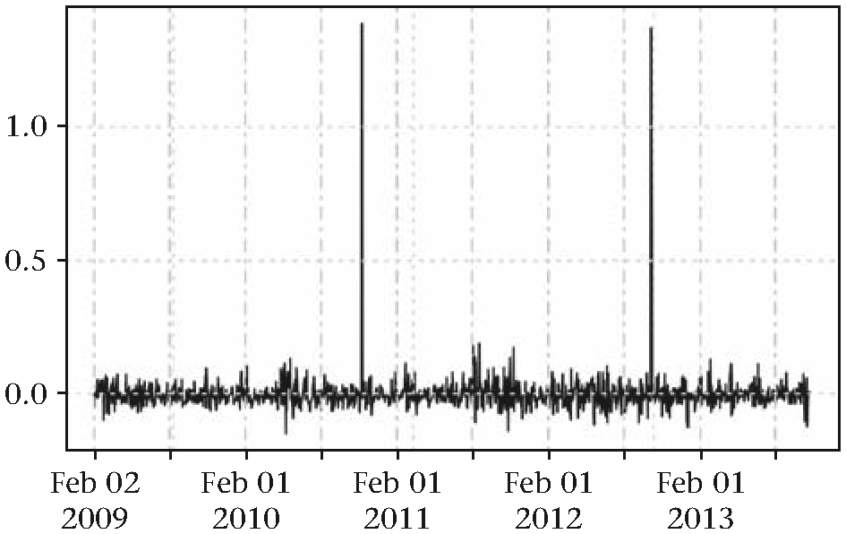
图5.12 VXX中的异常值
产生的矩阵列举了所有可能的两两相关关系。结果令人欣慰，SPY收益率和自己高度相关。SPY和VXX收益率呈现负相关。考虑到VXX是一支追踪波动性的股票，这也说得通。我们有多大把握相信SPY和VXX之间的相关系数是-0.46？以及，这个相关估计对异常值有多大敏感呢？VXX收益率图透露了2个异常值的存在。
过滤数据
如果移除异常值，相关估计将变化几何？我们面临三个选择。完全忽视异常值并继续统计分析，删除样本中的异常值，要么把异常值转化为有意义的值。三者中我们选择直接删除错误的记录。
# 找出异常值
outliers <- which(sv[, 2] > 1.0)
# 如果异常值存在则删除之
if(length(outliers) > 0) {
sv <- sv[-outliers, ]
}
cor(sv)
## SPY.Close VXX.Close
## SPY.Close 1.0000000 -0.8066466
## VXX.Close -0.8066466 1.0000000注意相关估计和散点图都均发生了戏剧性的改变：
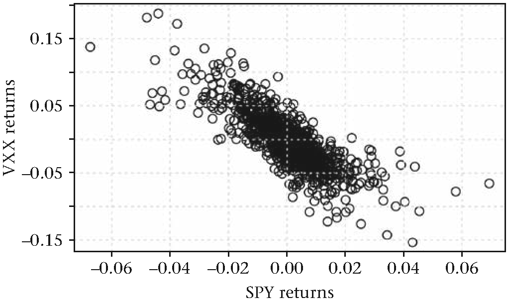
图5.13 异常值的去除
SPY和VXX的确存在强线性关系。一种量化关系的方式是考虑两个时间序列的线性回归的R2。相关与线性回归的概念紧密相连。事实证明，单变量线性回归R2的方根等于皮尔逊相关系数。R2是对因变量变化被自变量变化解释程度的一个测量。
(5.10)
回到研究中的时间序列，线性回归的结果可以视为穿过二维空间散点图的一条最优拟合直线。要建立这组线性关系，需要斜率和截距的估计。可以通过函数lm()返回得到。函数lm()也返回特定的统计量，描述参数的合理程度。当回归包含两个以上变量时（多元回归），估计的系数仍然组成一条直线，只不过在更高维空间。下面是线性回归试图拟合的数学模型：
（5.11）
我们想要研究系数和。项是个杂物框，包含一切没有被线性模型解释的部分。理想情况下，此项具有正态分布，无自相关或其他可辨识的结构。
R 公式
让我们先了解一些公式（formulas）的知识，再回到线性回归的例子。一些函数（lm(), glm(), nls()）接受符号表达式作为参数。R用~运算符来构造公式。给定两个变量x和y，我们可以创建下列符号表达式或公式：
# 创建一个公式
my_formula <- as.formula("y ~ x")
# 输出是什么？
my_formula
## y ~ x
# my_formula的类是什么？
class(my_formula)
## [1] "formula"这种方式有效地告诉R，我们想要建立因变量y和自变量x之间的线性关系。另外，R也知道我们希望取得线性关系的斜率和截距。将公式右边改成y ~ x - 1，可以忽略截距。如果超过一个自变量，我们可以指定公式为：y ~ x + z + W + z*W -1来捕捉变量yxz和w之间的线性关系，以及z和w的交互关系。函数I()用来执行公式内部的数学运算。比如，y~x+z+I(w*x)会造一个等同于w和x乘积的新变量。在R控制台输入?formula，打开内置的帮助页面，查看更多关于构建公式的例子。
# 创建一个线性回归的对象
reg <- lm(VXX.Close ~ SPY.Close, data = sv)
# 下面是输出结果
summary(reg)
## Call:
## lm(formula = VXX.Close ~ SPY.Close, data = sv)
## Residuals:
## Min 1Q Median 3Q Max
## -0.085607 -0.012830 -0.000865 0.012188 0.116349
## Coefficients:
## Estimate Std. Error t value Pr(>|t|)
## (Intercept) -0.0024365 0.0006641 -3.669 0.000254 ***
## SPY.Close -2.5848492 0.0552193 -46.811 < 2e-16 ***
## ---
## Signif. codes: 0 '***' 0.001 '**' 0.01 '*' 0.05 '.' 0.1
## Residual standard error: 0.02287 on 1187 degrees of freedom
## Multiple R-squared: 0.6486,Adjusted R-squared: 0.6483
## F-statistic: 2191 on 1 and 1187 DF, p-value: < 2.2e-16图5.14 回归结果展示
斜率和截距在summary输出的系数部分列出。本例中，截距是-0.0024365，斜率是-2.5848492。Pr(>|t|)下方的数字是估计参数的p值。p值是假设原假设为真时，观察到估计参数的概率。原假设是一个陈述——参数（斜率和截距）为零。p值很小，则拒绝原假设。翻译一下这种精致的表达，也就是说，我们相信我们的估计非零。
b <- reg$coefficients[1]
a <- reg$coefficients[2]线性模型告诉我们VXX收益率和SPY收益率在t时刻的关系为：。噪音项也叫做回归的残差。实际操作中，我们常常用函数abline()把线性回归的结果叠加到散点图上。
拟合曲线在一对收益率上看着很不错。残差效果如下：
par(mfrow = c(2, 2))
plot(reg$residuals,
main = "Residuals through time",
xlab = "Days", ylab = "Residuals")
hist(reg$residuals, breaks = 100,
main = "Distribution of residuals",
xlab = "Residuals")
qqnorm(reg$residuals)
qqline(reg$residuals)
acf(reg$residuals, main = "Autocorrelation")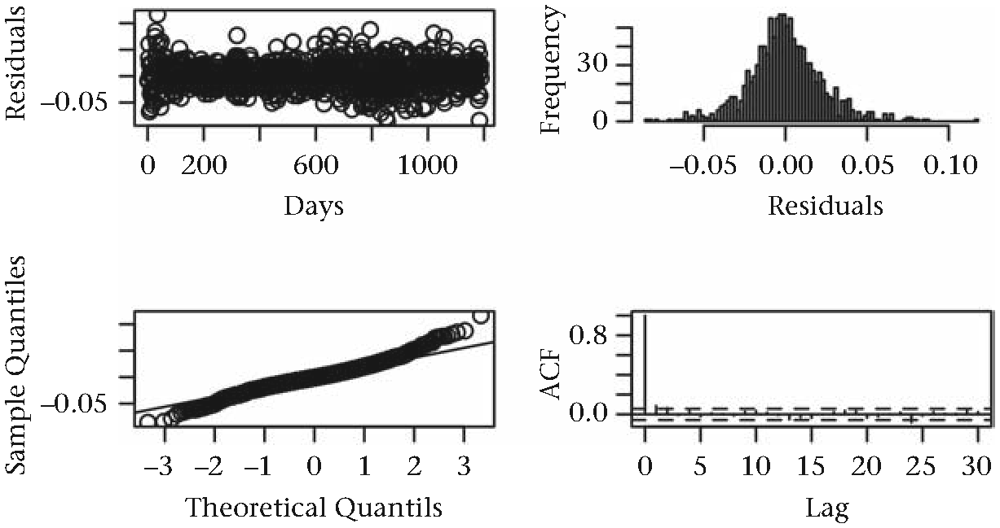
图5.15 诊断图
四幅图展现了残差的四个方面。首先，时间和直方图似乎表明残差是服从正态分布的。然而，它们有比正态分布更厚的尾部。同样的结论可以由函数qqplot()画出的分位图得到。函数acf()计算时间序列的自相关性。当前观察值和任何历史观察值有无关联？笼统而言，能否用过去的值推断预测下一期的值？实现的方式是把时间序列向前移动一步，重计算和原始序列的相关性。滞后零期，相关性为1。任何其他滞后期会产生一个不同的数。上面的自相关图表示在我们的简单线性回归模型中没有显著的自相关结构。如果有自相关，我们就必须重新讨论用线性回归描述两变量关系的假设。在理想世界，我们希望残差越“嘈杂”越好，希望它呈正态分布，没有内部结构（线性或非线性的依赖关系）。
查看同期收益率是一种分析不同证券关系的方法。一个更有趣的问题是，昨天和今天的收益率之间是否存在线性关系？如果答案是“是”，线性回归模型将是预测因变量回归因子情况的好的尝试。
vxx_lag_1 <- lag(VXX$VXX.Close, k = 1)
head(vxx_lag_1)
## VXX.Close
## 2009-01-30 NA
## 2009-02-02 104.58
## 2009-02-03 104.25
## 2009-02-04 99.37
## 2009-02-05 99.74
## 2009-02-06 99.13
head(VXX$VXX.Close)
## VXX.Close
## 2009-01-30 104.58
## 2009-02-02 104.25
## 2009-02-03 99.37
## 2009-02-04 99.74
## 2009-02-05 99.13
## 2009-02-06 97.70函数lag()计算一步价格漂移，也就是，时间滞后一天。现在，我们回到过滤的VXX收益率矩阵，看一看滞后SPY和VXX之间的线性回归。下例中，隐含假设为SPY收益率先于VXX收益率。
# 将收益率序列和收益率的滞后序列合并
sv <- merge(sv, lag(sv))
# SPY时候序列和VXX序列的散点图
plot(as.numeric(sv[, 3]), as.numeric(sv[, 2]),
main = "Scatter plot SPY lagged vs. VXX.",
xlab = "SPY lagged",
ylab = "VXX",
cex.main = 0.8,
cex.axis = 0.8,
cex.lab = 0.8)
grid()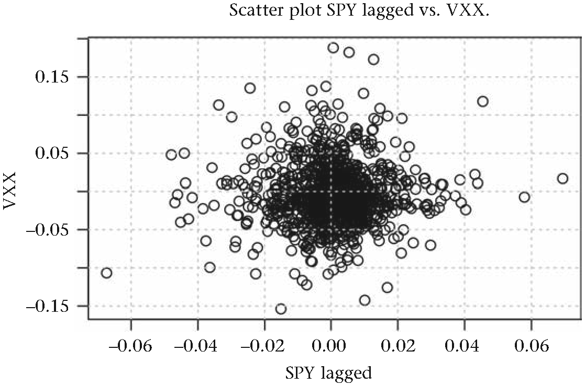
图5.16 含滞后的散点图
没有一点点意外。散点图暗示我们，滞后SPY收益率和VXX收益率没有可分辨的线性关系。线性回归的结果会证实这一猜想：
reg2 <- lm(VXX.Close ~ SPY.Close.1, data = sv)
summary(reg2)
## Coefficients:
## Estimate Std. Error t value Pr(>|t|)
## (Intercept) -0.004140 0.001121 -3.694 0.000231 ***
## SPY.Close.1 0.104119 0.093154 1.118 0.263918
## Residual standard error: 0.03857 on 1186 degrees of freedom
## (1 observation deleted due to missingness)
## Multiple R-squared: 0.001052,Adjusted R-squared: 0.00021
## F-statistic: 1.249 on 1 and 1186 DF, p-value: 0.2639那么，如果假设VXX收益率领先于SPY收益率呢？
我们可以很容易地通过滞后VXX，并使用SPY作为独立的回归因子再次进行回归。结果是一样的。
函数ccf()（交叉相关函数cross correlation function）进行相似的分析，它独立地滞后时间序列并计算两两相关系数。和acf()函数类似，但它取两列时间序列，而不是一列。
ccf(as.numeric(sv[, 1]), as.numeric(sv[, 2]),
main = "Cross correlation between SPY and VXX",
ylab = "Cross correlation", xlab = "Lag", cex.main = 0.8,
cex.lab = 0.8, cex.axis = 0.8)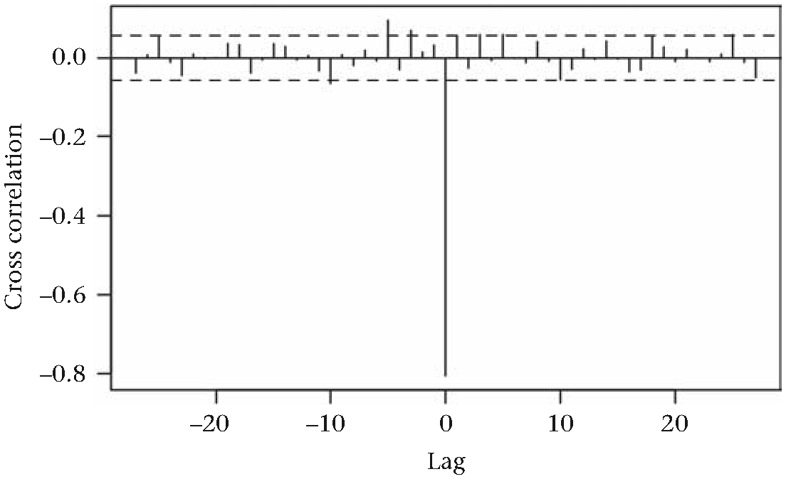
图5.17 收益率的交叉相关性
线性回归中的线性
如上所述，线性回归是一种试图识别回归因子中线性关系的数学模型。牢记限定修饰词“线性”。一种可能的情形是，两个变量相关性非常高，但线性回归却完全不能识别。
抛物线常作为经典例子来佐证这一观点。函数f(x)=x2是完全确定的，它清晰地勾勒了x和f(x)依的赖关系。在这组数据上建立线性回归，输出结果如下：
x <- seq(1:100)
y <- x ^ 2
# 生成散点图
plot(x, y)
# 拟合回归
reg_parabola <- lm(y ~ x)
# 在散点图上添加最优拟合直线
abline(reg_parabola, lwd = 2)
# 检视回归结果
summary(reg_parabola)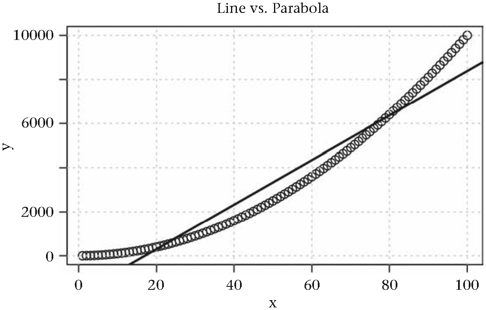
图5.18 直线和抛物线
显然，线性回归并不是识别非线性关系的理想选择。只要稍微调整一个变量，我们又能使用函数lm()了。
plot(x, sqrt(y))
reg_transformed <- lm(sqrt(y) ~ x)
abline(reg_transformed)
summary(reg_transformed)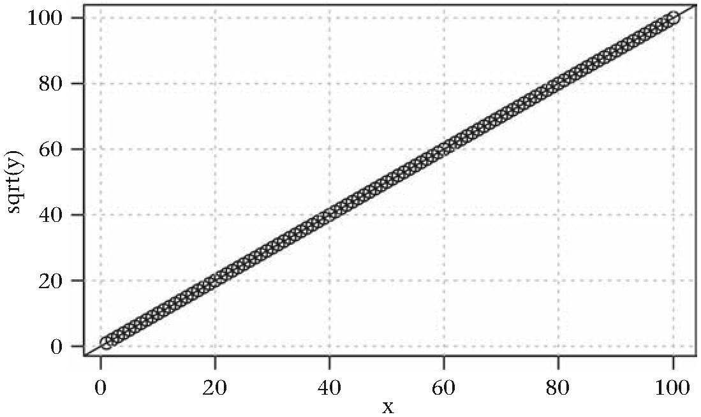
图5.19 平方根转换
变量的数学变换，会大大拓展你的线性回归模型适用场合。找到恰当的变换形式肯定不是一个简单的任务。
波动性
波动性是一组数据与他们均值的离差。给定任意数据，我们可以得到上述离差的一个估计。随机过程波动性一个常用度量是以前见过的标准差（standard deviation）统计量。
(5.12)
(5.13)
收益率的波动性是交易员和宽客深入研究的一个指标。
开发某些交易策略时，我们真正关心的是金融工具的收益率围绕他们平均值的摆动有多大和多频繁。我们并不关心移动的方向。相反，我们关注此类移动的相对大小。我们为什么不关心方向？答案是，方向很难预测。对大小数量说道一二却容易得多。
注意，波动率的公式包含收益率的平方这一重要组成基石。当处理每日或盘中收益分布时，我们发现均值趋近零。方差的公式因此可以近似为：
(5.14)
我们发现，至少每日收益率之间没有显著的自相关性。那么收益率分布的更高阶矩呢？考虑下面的模拟：
# 生成1000个正态分布的IID随机数
z <- rnorm(1000, 0, 1)
# 收益率和收益率平方序列的自相关图
par(mfrow = c(2, 1))
acf(z, main = "returns", cex.main = 0.8,
cex.lab = 0.8, cex.axis = 0.8)
grid()
acf(z ^ 2, main = "returns squared",
cex.lab = 0.8, cex.axis = 0.8)
grid()上面人工构建的收益率应该展示出自回归特性。事实上，这也是图中展现出来的。收益率的平方呢？
这应该不足为奇。由于原始向量z是iid（独立和同分布），我们期待向量的平方也是iid。
这里是真实收益率的平方的自相关特性。需要记住，收益率的平方加起来时，就成了离差或方差的代理。
par(mfrow = c(1, 1))
acf(sv[, 1] ^ 2, main = "Actual returns squared",
cex.main = 0.8, cex.lab = 0.8, cex.axis = 0.8)
grid()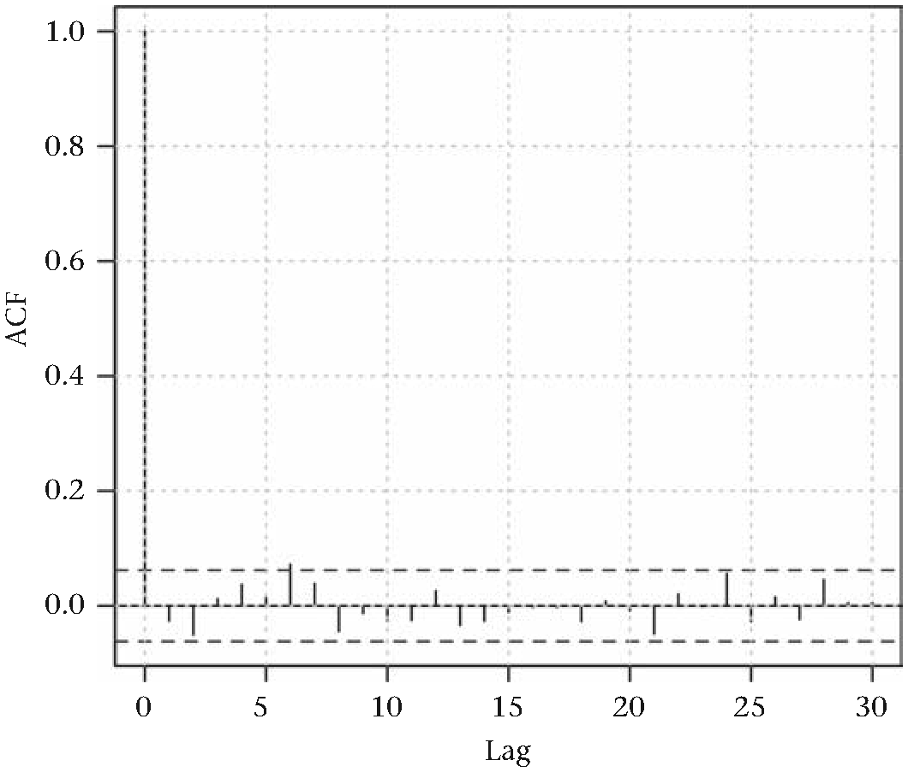
图5.20 收益率自相关性
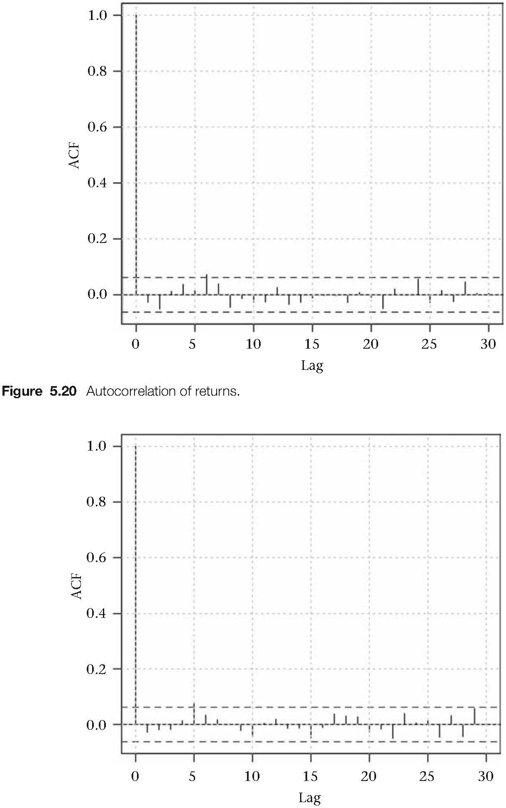
图5.21 理论收益率平方的自相关
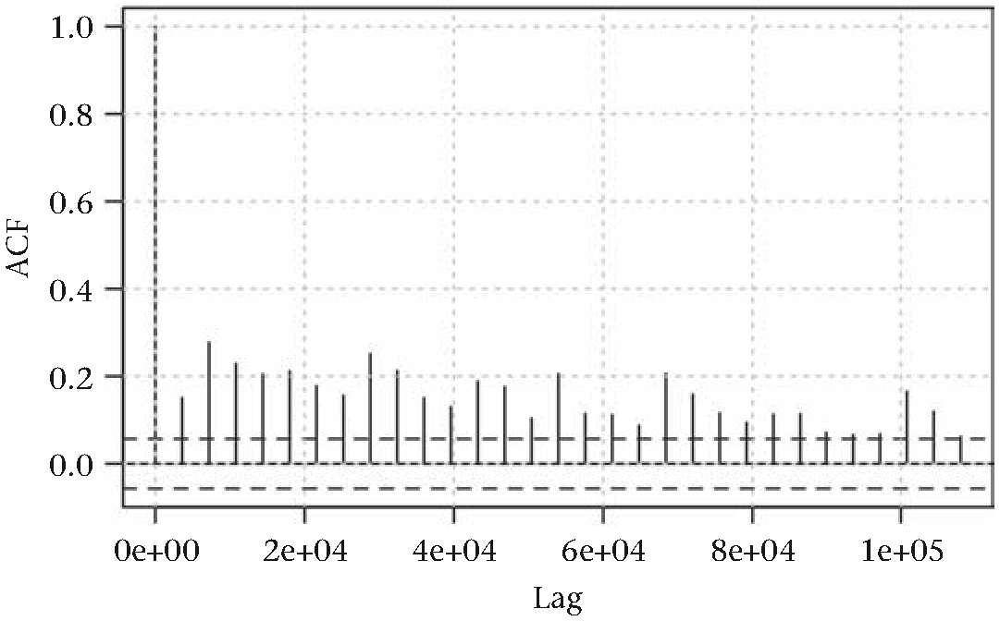
图5.22 真实收益率平方的自相关
自相关性统计显著地存在于每日收益率平方的各个滞后项。实证分布的高阶矩为也显示出自相关效应，收益率的绝对值也是如此。
par(mfrow = c(1, 2))
acf(sv[, 1]^3)
acf(abs(sv[, 1]))各种层次的计量经济模型被提出以解释这种高阶自相关结构[50]。这些模型主要可以分为三类：
- ARIMA
- GARCH
- Stochastic Volatility（随机波动率模型）
波动性的这类行为通常被称为异方差性。观察收益率随时间变化的曲线时，异方差性尤为明显。看起来没有自相关的正常序列应该不存在聚集效应。真正的金融数据存在这种效应，意味着时间序列的高阶矩有记忆效应。
总结
本章延续前面的初级概率统计知识，定义了什么是随机过程，以及金融时间序列和随机过程之间的关联。介绍了平稳性，以及多种在R里进行平稳性和正态性统计检验的方法。探索了时间序列之间相关性的概念，异常值检测，过滤技术。另外，我们讨论了线性回归和自相关在R里的实现，最后展示了收益率平方的自相关性。为了解释波动性的异方差性，我们又考虑了复杂的计量经济学建模技术。
翻译：杨环 审校：冯凌秉